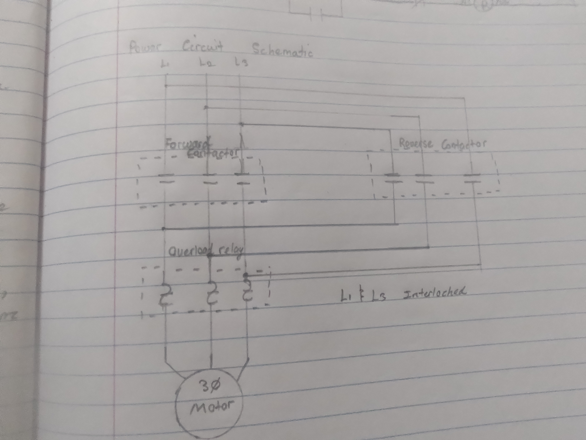

Fig 1.5: Control Circuit - Forward/Reverse Magnetic Motor Starter.

Fig 1.6: Power Circuit - Forward/Reverse Magnetic Motor Starter.
An Akon for ya
This section of the portfolio highlights the knowledge and practical skills I developed during the course Control and Switching Circuits. Its purpose is to demonstrate my understanding of wiring and operating control circuits used to manage electrical equipment safely and efficiently. It includes photos, videos, and written explanations of circuits involving components such as push buttons, contactors, relays, overload protection devices, and an introduction to PLC-based control systems. Overall, this section reflects my ability to interpret circuit diagrams, assemble control circuits, and apply safe and correct installation practices.
Fig 1.5: Control Circuit - Forward/Reverse Magnetic Motor Starter.

Fig 1.6: Power Circuit - Forward/Reverse Magnetic Motor Starter.
| Item.No | Description | Quality | Quantity |
|---|---|---|---|
| 1 | Single Phase Motor | Good | 1 |
| 3 | Capacitor | Good | 1 |
| 2 | Wire Stripper | Good | 1 |
| 1 | Digital Multimeter | Excellent | 1 |
| 1 | Flathead screw driver | Good | 1 |
| 4 | Philliphead screwdriver | Good | 1 |
| 3 | NO pushbutton | Good | 1 |
| 3 | NC pushbutton | Good | 1 |
For control and switching circuits, components like contactors, relays, push buttons, overload protection, and indicator lamps were selected to ensure safe switching, control, and fault protection. Each component works together to start/stop the system, control logic operations, and protect against electrical faults. The design follows IEC and NEC-based standards for safety and reliability. Proper enclosure protection, grounding, and clear layout improve maintenance, safety, and suitability for damp environments.
Improved design features
For control and switching circuits, safe wiring practices include using correctly rated control cables, secure connections, and proper grounding of control panels and components. PPE such as insulated gloves, safety boots, and safety glasses should be worn during installation and testing. Lockout/Tagout procedures must be followed by isolating the control supply before maintenance work. Protection against shock, short circuits, and overloads is provided through control fuses, circuit breakers, and overload relays. In wet locations, IP-rated enclosures and sealed cable entries should be used to protect control devices. These practices follow standards from the International Electrotechnical Commission and guidelines similar to the National Electrical Code.
This course made me gain more experience with motors and a few other wiring methods which are very well valuable skills in an industrial setting.